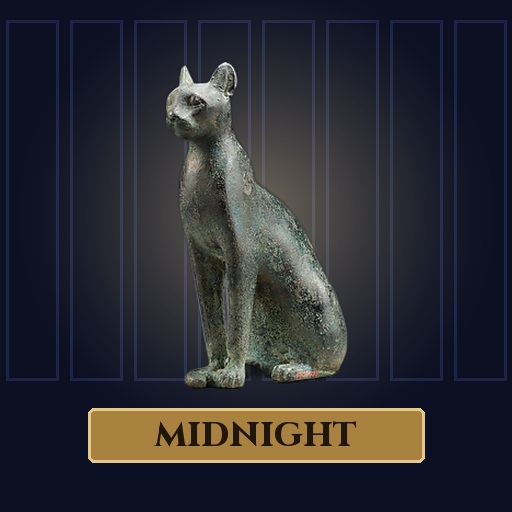

<- all projects

Midnight Museum Cases
PC
Volume
Live
After closing, the exhibits move.
You are the new night custodian at the Hawthorne Museum. Every night something rearranges a gallery, a bronze cat on the samurai's plinth, a hippopotamus napping on a bench, but nothing is ever stolen. Sweep the dark with your torch, find what moved and return each artifact to the glass case whose plaque describes it. Every object is a real piece from The Metropolitan Museum of Art's Open Access program, 104 Curator Cards in all. Six galleries and thirty nights lead to a riddle the founder left in 1911 that nobody ever solved.